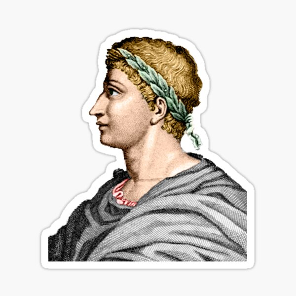
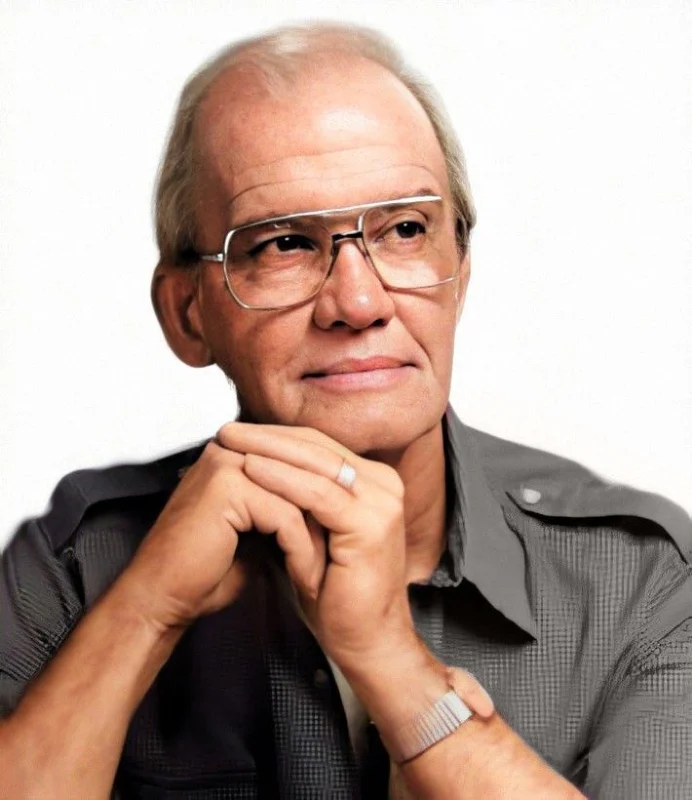

Kata-kata yang membentuk kebiasaan

Kebiasaan berubah menjadi karakter

Aku akan membentuk kebiasaan baik dan menjadi budak mereka
Kemalasan tidak lebih dari kebiasaan beristirahat sebelum lelah
Kebiasaan adalah tempat hidup, karier, dan tubuh kita dibuat
Orang-orang yang sukses hanyalah mereka yang memiliki kebiasaan sukses
Kita menjadi apa yang kita lakukan berulangkali
Kebiasaan adalah segala sesuatu yang kita lakukan secara otomatis, bahkan kita melakukannya tanpa berpikir sebagai akibat dari melakukan suatu aktivitas yang dilakukan secara terus-menerus sehingga menjadi bagian dari kita (Asrori, 2020, hlm. 191). Pengertian tersebut sejalan dengan pendapat Witherington (dalam Asrori, 2002, hlm. 114) yang mengartikan kebiasaan (habit) sebagai "an acquired way of acting which is persistent, uniform, and fairly automatic".
Dengan kata lain, kebiasaan timbul karena proses penyusutan respons menggunakan stimulus yang berulang, sehingga respons tersebut dapat keluar dengan cepat bahkan seakan otomatis tanpa memerlukan stimulus yang kuat. Semakin menyusut suatu proses respons, semakin kuat juga kebiasaan yang terbentuk pada individu.
Di web ini kami menyediakan sistem pencatatan tugas atau bisa disebut juga To Do List untuk para siswa/mahasiswa yang memiliki jadwal padat. Dengan fitur ini kamu dapat memudahkan pencatatan tugas, schedule harian, dan tugas lainnya secara cepat, efisien, dan terstruktur.
Klik tombol di bawah untuk langsung masuk ke halaman StudyKIK 👇